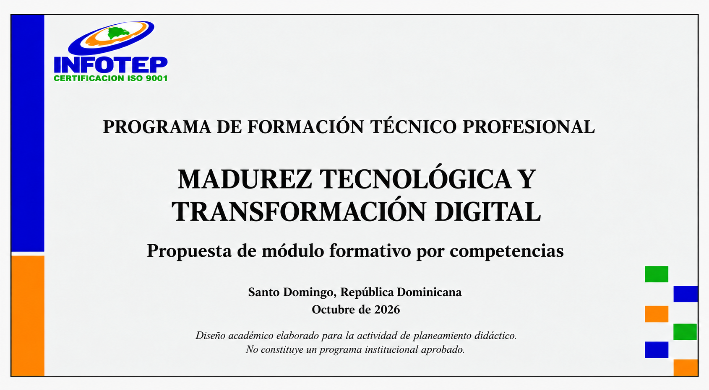

Propuesta académica de formación técnico-profesional

PROGRAMA DE FORMACIÓN TÉCNICO PROFESIONAL
Madurez Tecnológica y Transformación Digital
Propuesta de módulo formativo por competencias
Santo Domingo, República Dominicana · Octubre de 2026
Programa PFMTTD · 80 horas · Módulo I: 36 h · Módulo II: 44 h
Simulación pedagógica del inicio, desarrollo y cierre de una formación; no representa la ejecución de las 80 horas.
Diseño académico de práctica; no constituye un programa institucional aprobado.
BIENVENIDOS A NUESTRA EXPERIENCIA
Comencemos juntos
Un espacio para conocernos, construir confianza y aprender desde nuestra experiencia.
Tu experiencia, tus ideas y tu participación hacen posible este aprendizaje.
RETOMAMOS NUESTRA RUTA
Retomemos nuestro aprendizaje
Representamos una sesión posterior del programa: recuperamos lo aprendido y preparamos el trabajo de hoy.
APRENDEMOS HACIENDO
De usar tecnología a transformar
Observemos un mismo negocio, contrastemos decisiones y construyamos explicaciones con evidencias.
RECONOCEMOS LO APRENDIDO
¿Qué aprendimos y qué necesitamos mejorar?
Sinteticemos una idea, comprobemos lo realmente observado y conectemos con el diagnóstico de madurez tecnológica.
BALANCE · VALORACIÓN · TRANSFERENCIA
¿Qué aprendimos para mejorar una MiPyME?
Recuperamos nuestros propósitos, revisamos evidencias y proyectamos cómo aplicar lo aprendido.